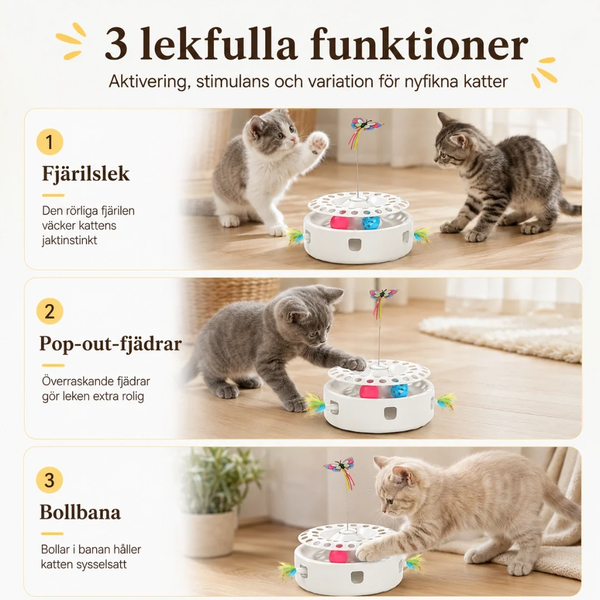

Om produkten
Ge din katt en varierad och interaktiv lekupplevelse med denna 3-i-1 kattleksak. Leksaken kombinerar en roterande fjäril, en bollbana och en fjäder för att uppmuntra katten att leka, jaga och röra på sig.
Med fyra olika spellägen och en touchsensor kan katten själv aktivera leken. Leksaken kan användas med USB-kabel eller batterier.
Pris
799 kr
Produktinformation
- Produkttyp: Interaktiv kattleksak 3-i-1
- Färg: Vit med färgade detaljer
- Material: ABS och PP
- Funktioner: Roterande fjäril, bollbana och poppande fjäder
- Spellägen: 4
- Aktivering: Knapp och touchsensor
- Ström: USB-kabel eller 4 x AA-batterier
- Vikt: Ca 420 g
- Artikelnr: 67215